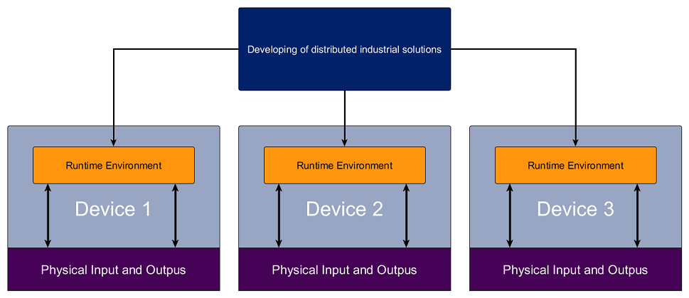
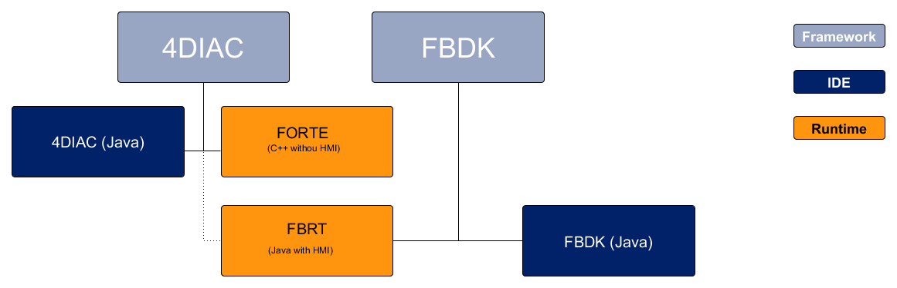

To understand what's next, you need to know about IEC 61499. Go to the following page to learn about it:
As seen in the IEC 61499 explanation, an application developed using this standard use Function Blocks (FB). There are ways of creating and defining FB, but at some point in the chain from FBs to actually controlling something physical, something has to actually implement the logic behind the network of FBs, and behind the FBs itself. That's where the runtime environment comes in. This piece of software loads the network of FBs somehow, and then execute the events and follows the rules of the standard like the one seen here. All this is known by the runtime environment.
So, where is the runtime environment in the standard? Nowhere. Basically IEC 61499 says how to develop a distributed industrial system, but it doesn't say how to actually implemented. In the image below it's presented the idea behind this decoupling between the development of application and the its execution.
The rectangle on the top, is the representation of the system according to IEC 61499. Here you need a tool that allows you to create FBs and connect them. Also, it should represent the devices of your system, and some method to show which part of your application is to be deployed in each device. This is normally done in a normal computer.
The big squares below represent real devices, like PLCs, some control hardware, a raspberry pi or similar. In these devices, a runtime environment we talked about should be able to run. This will receive the information from the top rectangle to create the network of FBs, execute them, make the events go from one to the other and so on. The devices, normally, have inputs and outputs, and these are accessed by the runtime environment. This is just the big picture from the design to actually controlling physical units.
The 4DIAC framework provides two projects and allows the development of distributed control systems compliant to the IEC 61499 standard:
Because of the decoupling between developing of systems according to IEC 61499 and the runtime environment, some things have to be taken in account when developing the system. As seen, you can create FBs in the IDE, but the runtime environment doesn't know about it; it doesn't know how to execute it. For now, in 4DIAC you have the possibility to export your created FB into FORTE code (C++ files). In order to make it work, you need to add your exported code and compile it with the FORTE's source code. This is possible only for Basic and Composite Function Blocks (BFB and CFB), since both definitions are in the standard, but the Service Function Block (SFB) should be coded from scratch, since these are the FBs which definition is not in the standard.
4DIAC is extensible, meaning that's is possible to easily extend it to support exporting to another runtime environment.
FORTE is intended to run in PLCs, so Graphical User Interface as Human Machine Interface (HMI) is not possible with it. We therefore recommend to use the Function Block Development Kit (FBDK) by Dr. James H. Christensen for HMI. FBDK is a Java based IEC 61499 framework and can be downloaded from Holobloc Inc. Its runtime environment FBRT can be started within the 4DIAC-IDE as well, whereas 4DIAC-IDE contains the HMI Function Blocks of FBDK within its library.
In other words, FBDK is another tool similar to 4DIAC, and FBRT is a runtinme environment similar to FORTE, but it's written in Java and support Graphical User Interface. Since all these tools are developed according to same Compliance Profile, there aren't problems using them together. In 4DIAC you find the Function Blocks for the Graphical User Interface that can be used by FBDK, but not in FORTE.
Now that you have a better understanding of the IEC61499 standard, and know about the tools around 4DIAC, is time to start using it. Take a look at the following page:
If you want to go back to the Start Here page, we leave you here a fast access
Or Go to top